An Antidote to the Mid-Round Lull: Four Courses with Exceptional Middle-Stretches
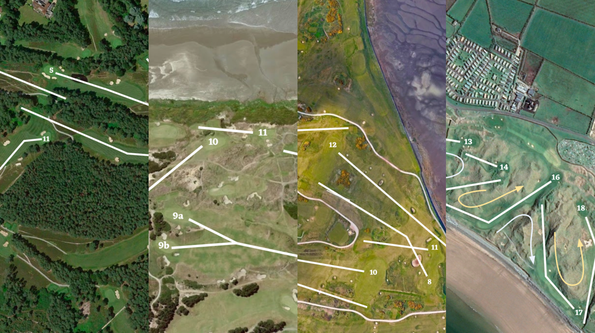
Every course seeks to provide a compelling opening and closing hole, to commence with captivation and conclude with contentment. However, one of the least-discussed portions of a round integral to a player’s enjoyment is the middle.
Golfers are often engaged at the beginning of the round, eager to observe the features of each hole. By the end, they try to savor every last moment on the course. However, in the central portion, the course might lose the golfers’ full attention and appreciation if not intriguing enough. Thus, these inner holes have the most significant disadvantage to regale golfers.
The Middle Act in Film and Music
The significance of the middle is not only observed in golf course evaluation. Rather, any long-form piece of art features a central portion integral to its appeal. For example, an album or movie that lacks an exciting middle is doomed to gain the humdrum critique: “I thought the middle was a bit slow and boring.” There is no requirement for these works to be “exciting” in their central portion. Nonetheless, when the audience is most likely to waver in attention, the artist must compensate all the more.
Additionally, the middle act offers the most desirable time for an artist to express the purpose and identity of the artwork. This portion is where the true colors, ideas, and expressions of the creation must shine. It is during this period that the message is developed and the audience’s hearts empathize with the production they experience.
There is no better time than in the middle act for an artist to express the purpose and identity of the artwork.
With this artistic framework for criticism, golf courses can be evaluated under similar criteria. It is in the innermost sections of any artwork that the truest character and identity will shine brightest. The story is pushed to completion, momentum is preserved, and the experience flows in coherency.
Certain examples of golf courses that excel in this category will help further the discussion of this obscure quality. Perhaps the best method to begin is to travel back to the beginning, to the old greats that have inspired many of the most distinguished golf courses of all time.
The Old Course – Subtle and Spirited
There is no better example of a course that seamlessly follows the natural shape of the land it occupies than the Old Course. Despite the low-profile landforms that the middle holes cover, the course restrains itself in scale — St. Andrews does not endeavor to over-construct its appeal. Instead, the brilliant positioning of subtle greens and bunkers serves as the chief interest. Better, yet these holes make for one of the most engaging sets of holes on the course.
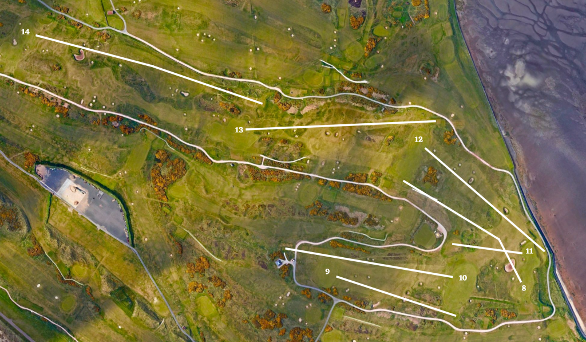
An aerial of the wonderfully chaotic and compelling stretch of holes 8-14
The 8th is a beautifully strategic par four, as it takes a wild path to reach its destination, crossing over the path of the 11th to play to the right-side portion of a green shared with the aforementioned hole. One is sure to be captivated by the sight of up to four groups all playing to the same green simultaneously!
The Old Course’s routing reaches the flattest spot on property with the 9th and 10th, and both offer thoughtful short par fours. Instead of an artificial creation on the benign land these two sit on, a natural low-profile layout exists for these two holes. Though they are not as “exciting” as the Road Hole, per se, they still are full of intrigue and give chances to score well before the difficult tough stretch of the back nine commences.
The Excitement Intensifies…
“Eden” is a name that carries great weight in the golf world — the 11th is often considered one of the greatest (if not, the greatest) par three in the world. Charles Macdonald famously used the hole as one of his template par threes in all his courses, and his choice was not in vain. The severe back-to-front tilt of the green-backed by sharp runoff (and the Eden estuary behind) are memorable features of this intimidating shot. Add in the strategic influence of the “strath” bunker that fronts the green, and it is no question why this hole is consistently heralded among the most renowned holes ever to exist.
https://twitter.com/bogeytrains/status/1548358785864835075?s=20
It speaks volumes that the world-renowned holes of the Old Course boast no carnivorous cliffs to carry, no towering dunes to play through, and no significant movement of dirt in assembly. This verity can not be overstated enough: small-scale features can concoct the most mesmerizing holes in existence.
The 12th is one of the most celebrated and confusing holes in the entire course. It features numerous fairway bunkers, but nearly all are blind from the tee. Even though this hole is drivable for the longest hitters, a well-struck tee shot must avoid the bunkers with a few good bounces and a bit of luck. One must choose his adventure on this hole — as Collin Morikawa recently commented before playing the 2022 Open, “I’m still trying to figure out hole 12… I could tell you 15 different ways to play it, and all could be wrong.”
The 12th green at the OId Course (Credit: The Fried Egg)
Approaching the green of the 13th, two features front the green that adds loads of character. First, a bunker 20 yards in front of the green creates a visual challenge. However, the real interest exists with a grassy hollow that cuts into the front of the green. These features gave rise to Raynor’s “Lion’s Mouth” template hole, where a bunker or other feature would protrude into the front of the green. This feature forces players to be wise about their preferred angles into the green depending on the day’s pin placement.
It would not be possible to discuss the entire brilliance of the 14th in this article, so a sketch from Alister Mackenzie of the numerous routes of play on the hole will have to suffice. The hole is one of the most interesting, playable, and thrilling holes ever devised, and has influenced many three-shot holes throughout history. Plus, who can forget the stunning qualities of the Hell Bunker!
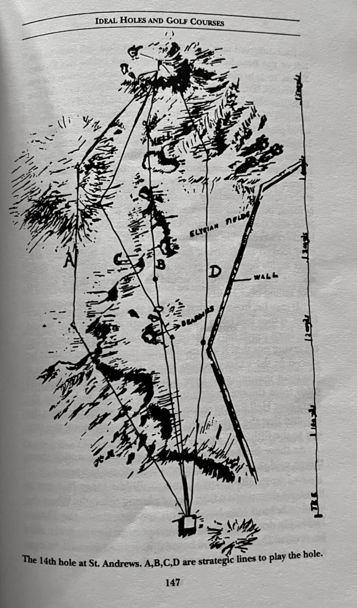
Alister Mackenzie’s sketch of the 14th hole illustrates several possible lines of play
Template Hole Trivia
One quite hilarious piece of knowledge about this stretch is that three of these holes were used as inspiration for Macdonald/Raynor template holes. As previously discussed, the 11th served as the “Eden” par-three, the 13th inspired the “Lion’s Mouth” green, and the 14th gave rise to the “Long” hole with the Hell bunker. Macdonald and Raynor only consistently used about 20 different templates, and four of them exist at the Old Course (the Road Hole 17th is also used as the “Road”).
Most importantly, nearly all of the holes are limited in large-scale features — an indication that even relatively featureless land, covered with an ounce of creativity, can provide thoughtful golf holes in the stretch courses often need them most.
Ballybunion – The Ruler of Routing
Ballybunion is perhaps the king of mid-round interest. Whereas many courses select their best land for a series of memorable finishing holes, Ballybunion enters and exits the land along the stunning coastline numerous times throughout the round. In this light, the Ballybunion’s routing provides remarkable insight into the characteristics of clever routing.
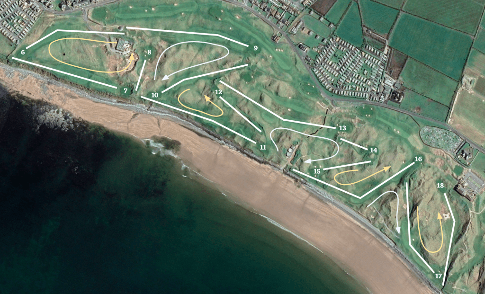
The routing of Ballybunion forms multiple “circles” in which the holes recede and return to the coast.
Players first glimpse the ocean as they walk towards the devilish push-up green of the sixth. With runoff on nearly all sides of the green, players must stay focused on their approaches and short game. As one of two holes at Ballybunion to play along the coast in its entirety, the seventh is a gorgeous long par-4 straddling the cliff edge. Tee shots that stray away from the edge will encounter a difficult approach into the green, as the “delayed penalty” strategy of the hole is engrained into its design.
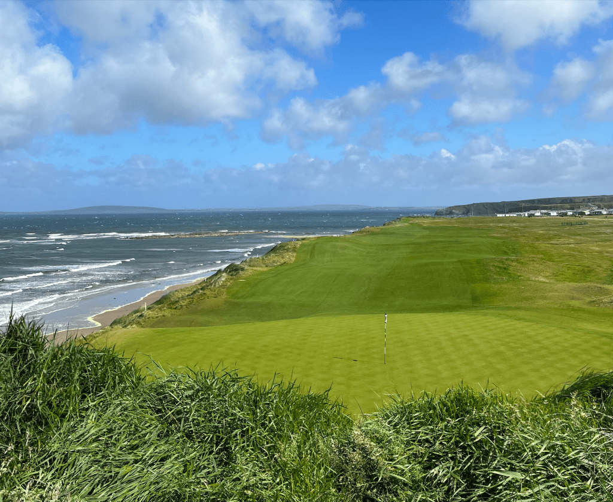
A view looking back on the 7th fairway
After playing back into the strategic and compelling eighth and ninth holes, the routing returns on the 10th, which traverses through the sprawling dunes back to the edge. This series of holes forms yet another “loop” in the routing, where the layout leaves and returns to the coast. This pattern begins at the 6th hole and continues until the end of the round. Indeed, Ballybunion’s routing is very the foundation for the thrilling series of holes in the center of the round.
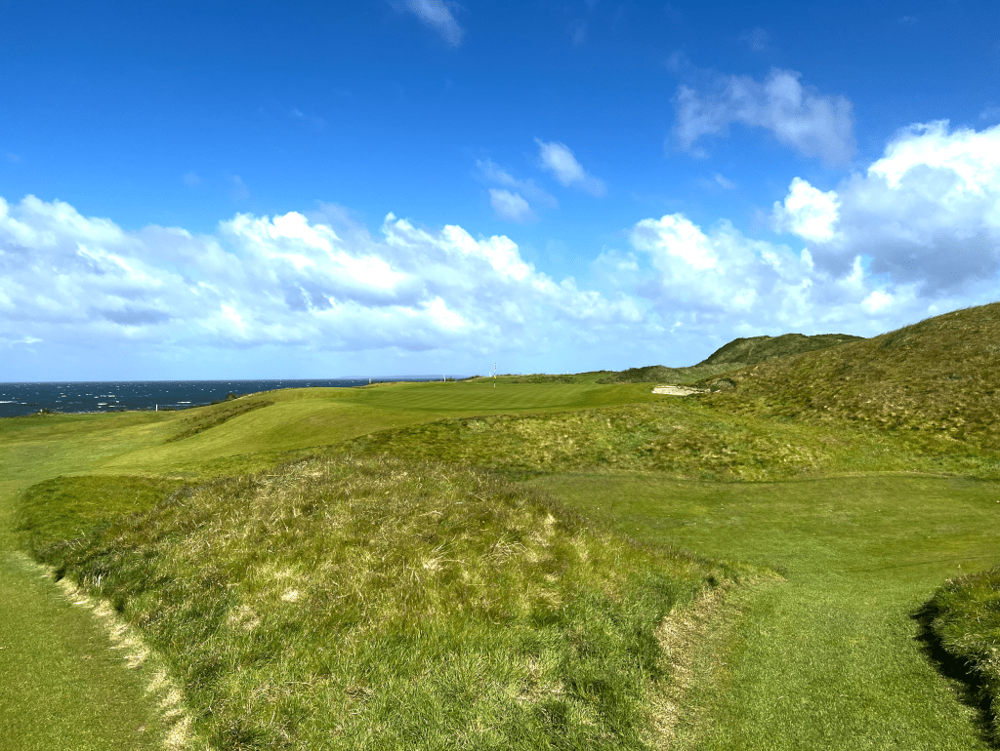
The 10th green sits atop a small ridge. A collection area fronts the green to find poorly-struck approaches.
The Greatest Hole in Ireland…?
Smack in the central portion of the round, the most famous hole in the country of Ireland never fails to excite. Tumbling down the dunes in dramatic and thrilling fashion, the par four 11th provides a true test of shot-making from tee to green. With the wind howling off the coast, only the finest well-struck shots will find the fairway and the green. It is indeed one of the hardest holes on the course, but the most memorable.
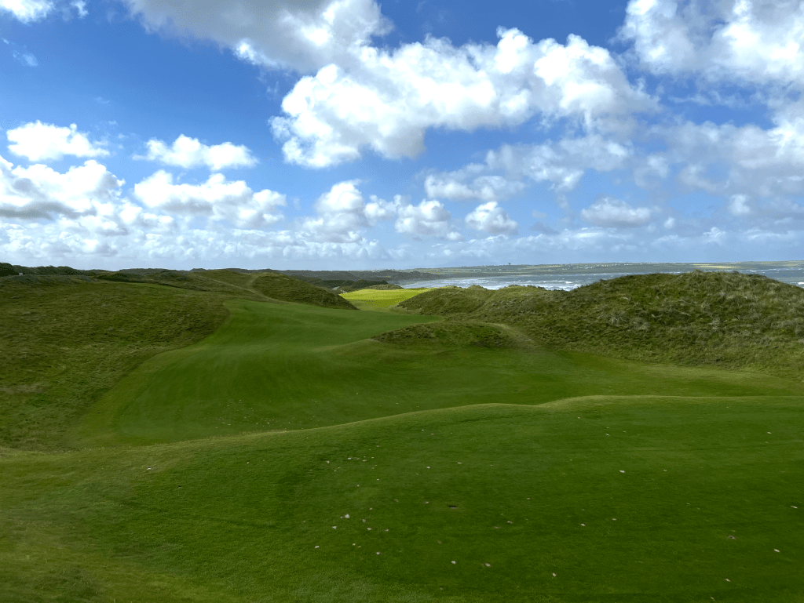
Nothing is as treacherous and thrilling as the approach into the tumbling landforms of the 11th green.
The 12th and 13th play away from the coast, before back-to-back threes in the 14th and 15th return towards the ocean. Though the closing holes at Ballybunion are not the focus of this article, they continue to illustrate the secret to Ballybunion’s charm. The 16th plays away, the 17th returns, and the 18th heads back towards the clubhouse. This process — leaving and returning — constitutes the natural crescendos that give Ballybunion, and better yet, its middle-round holes, their thrill.
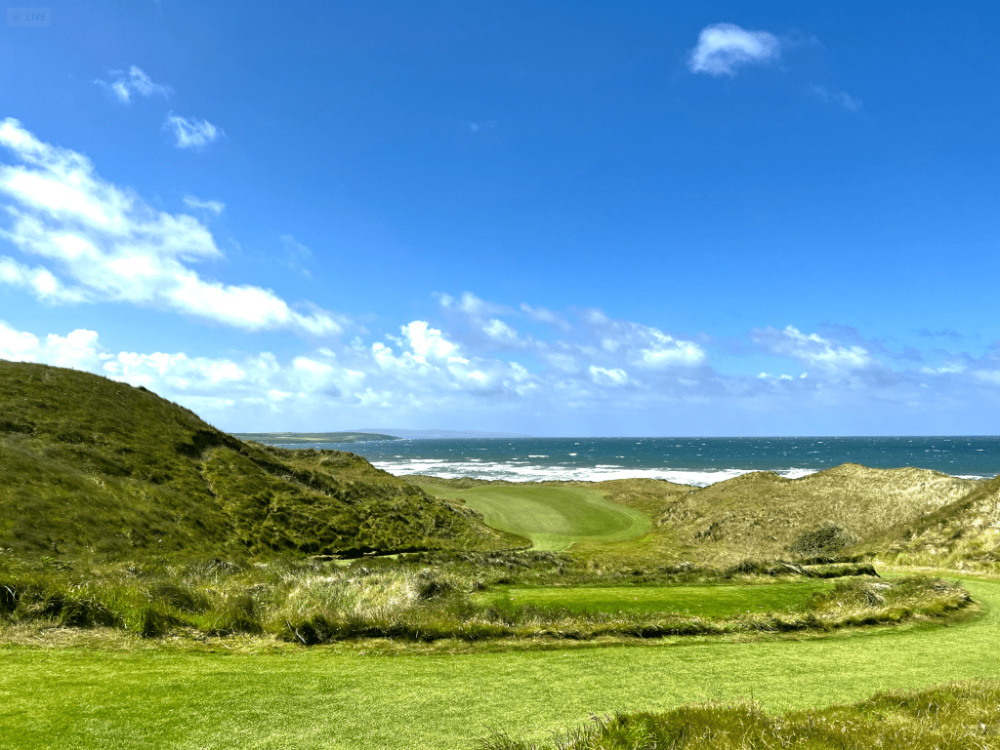
The 17th continues the process of arriving and leaving the oceanfront property.
Ballybunion’s Artistic Qualities
A broader conversation again exists over this topic’s connection to music and movies. Well-directed movies often explore multiple ideas throughout their film, but consistently highlight a central theme. Thoughtful albums and songs also do the same, ascending and descending in volume and lyrical weight throughout. With the “central theme” of the ocean, Ballybunion exhibits this very quality. By exploring the property with the paramount subject of the ocean, the routing provides other opportunities to tell its “story” in between its coastal ventures.
Thus, the vitality of middle holes is realized through intelligent routing. Ballybunion features world-class holes throughout its round, all derivative of its genius staging.
Sunningdale Old – A Centered Climax
Though Sunningdale has no dramatic coastline or colossal cliffs to boast, it reserves its most memorable stretch for the center. Most of the memorable shots at the course are taken in this middle stretch of holes. From an artistic perspective, Sunningdale gives the fullest impression of its essence in the innermost section of its course.
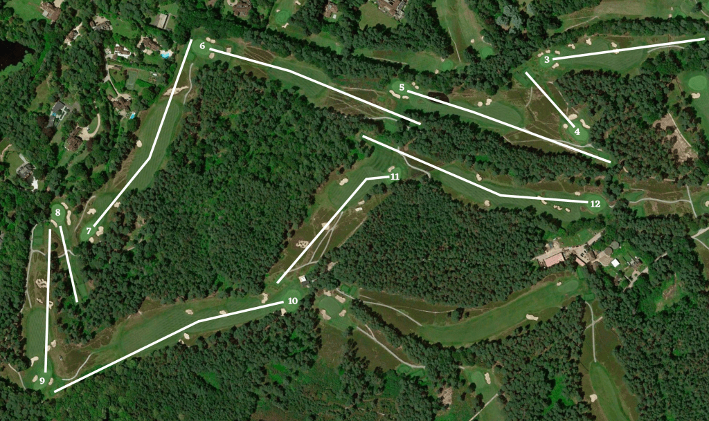
The entirety of holes 3-12 at Sunningdale Old are worthy of mention, but we’ll stick to the 9-12th for the sake of the article.
After climbing up to one of the highest ridges on the property, the 9th plays as a semi-blind driveable par-4. Players trying for the green must navigate a series of bunkers positioned 30-50 yards from the green, and be careful not to go long of the green. A layup is best placed on the left side of the fairway, where the view and angle into the green are more conducive to an approach, especially when the pin is tucked back right.
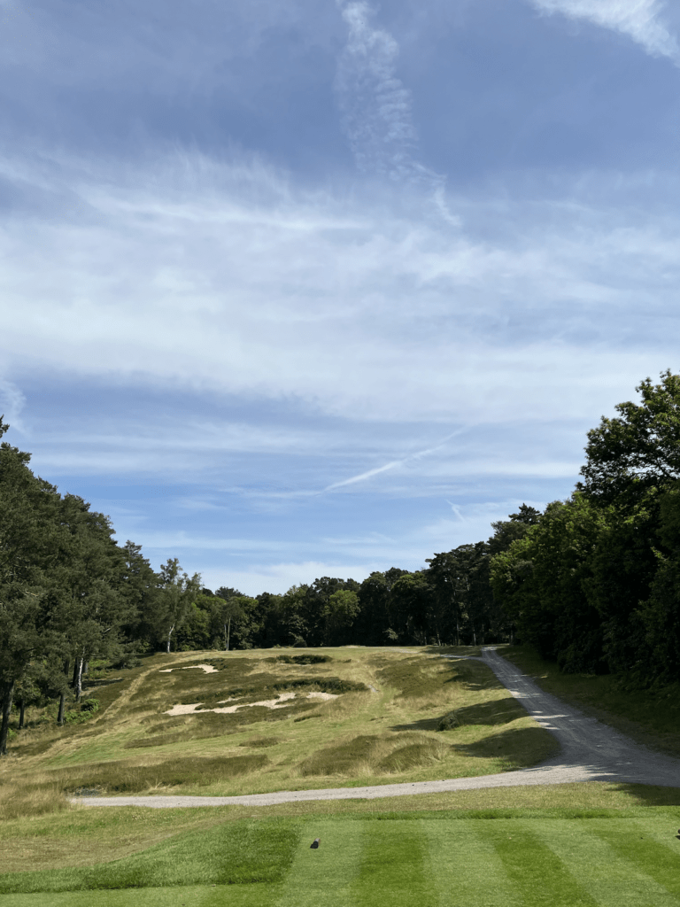
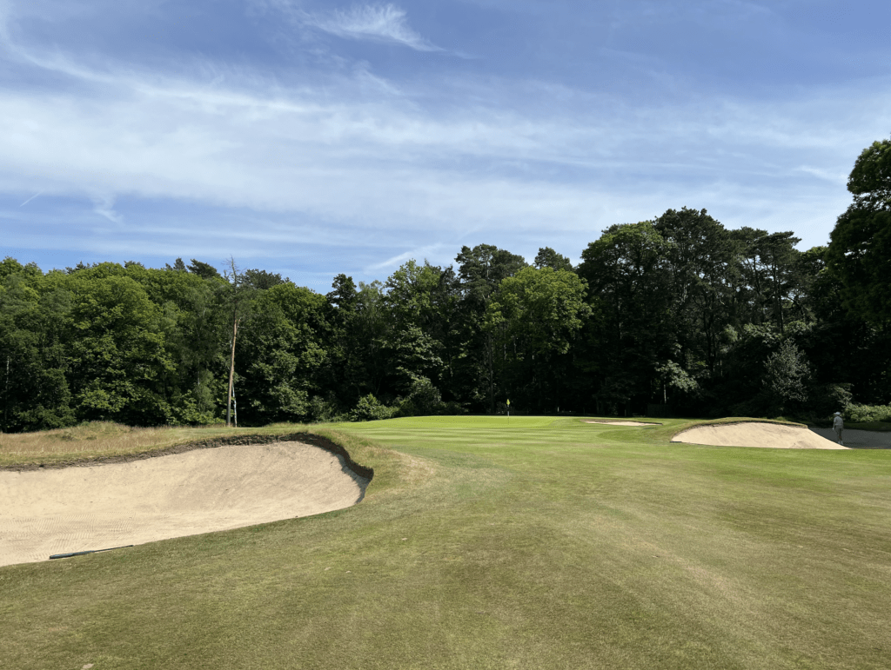
Above: The semi-blind drivable par-four 9th at Sunningdale Old
The 10th features one of the most scenic tee shots in all of heathland golf. Golfers will certainly remember seeing their tee shots tumble down the hill, and hopefully not into one of the numerous bunkers. After an uphill climb, the halfway house awaits golfers hungry for food and potentially more great golf.
As if there were too few phenomenal short par-fours, the 11th is able to surpass the 9th in excellence. A gorgeous blind tee shot forces places to trust their line off the tee. Shots that venture too far left face a difficult angle into a tiny green. Runoff behind the green also amplifies the fright of pitching into this shallow surface.
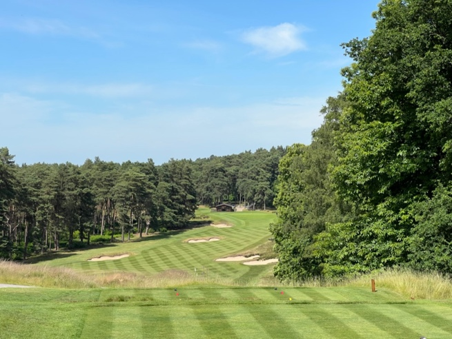
The tee shot down into the 10th fairway
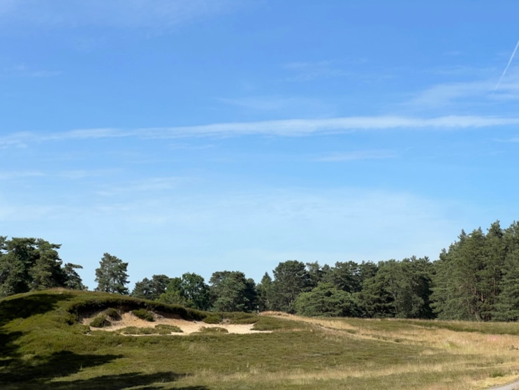
A beautifully sculpted bunker fronts the blind tee shot on the 11th
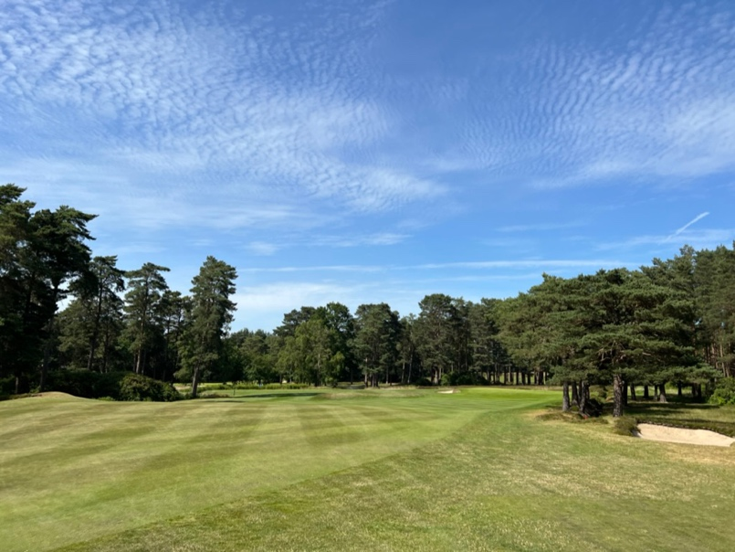
The reveal of the 11th fairway and green
Perched atop a ridge, the green on the 12th occupies one of the course’s most interesting and aesthetically pleasing locations. Two solid shots must be struck into the fairway and the green, while those that fail to hit the fairway must navigate the lovely string of bunkers that cut through 90 yards from the green. Interestingly, Willie Park Jr.’s green was located in the low area to the right where Colt’s green sits today, and the hole is all the better for this change.
This stretch of holes is without question the climax of the entire round. And better yet, it is situated right in the center of the round — riveting golf at its finest.
Pacific Dunes – Modern Adaptations
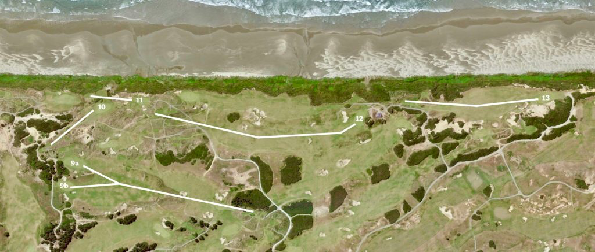
The stretch of holes 9-13 covered in this article is the second separate time that Pacific runs along the ocean.
Quite interestingly, Tom Doak’s routing was heavily influenced by Irish links courses such as Royal Portrush and the aforementioned Ballybunion. From the back-to-back par-threes to the multiple entrances and exits from the ocean, Pacific’s inspiration is not hard to uncover. As discussed with Ballybunion, there are few better methods to captivate a golfer’s enthusiasm than to give him multiple holes along the property’s best land.
The course first reaches the ocean with the 3rd green and 4th fairway, however, it leaves shortly thereafter. The 8th begins the return back to the ocean, and it must not go unnoticed. With a creative design, the green features a plateau in the short left portion, transforming into a punchbowl in the back right. The green on the 8th practically begins this superb stretch.
Just before golfers might grow tired of the back and forth nature of the relatively subtle previous two holes, the 9th exposes massive landforms with a quirky twist. In an unusual fashion, the hole alternates between two greens every day — one is perched on the ridge right, and the other sits in the lower bowl left. This sort of variety is sure to excite any golfer who encounters it.
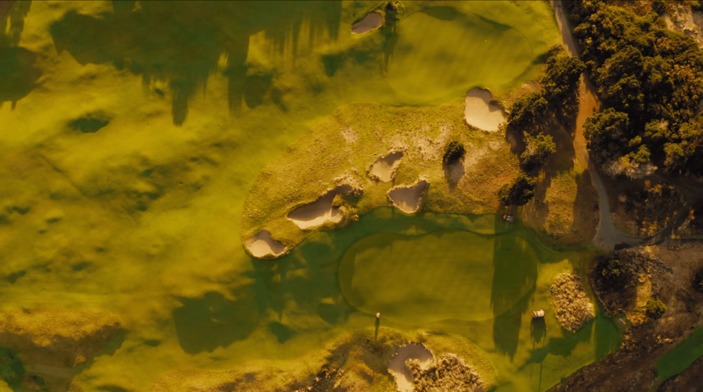
An aerial of the 9th’s two putting surfaces (credit: The Fried Egg)
Then, as if there weren’t enough quirky interest, the 10th and 11th follow as back-to-back par-threes. The hallmark of Pacific’s routing centers on these two holes, and they are both incredibly exciting. The former asks for a long iron into the receptive green, and the latter a short iron or wedge. Not to mention both play into and along the Pacific Ocean!
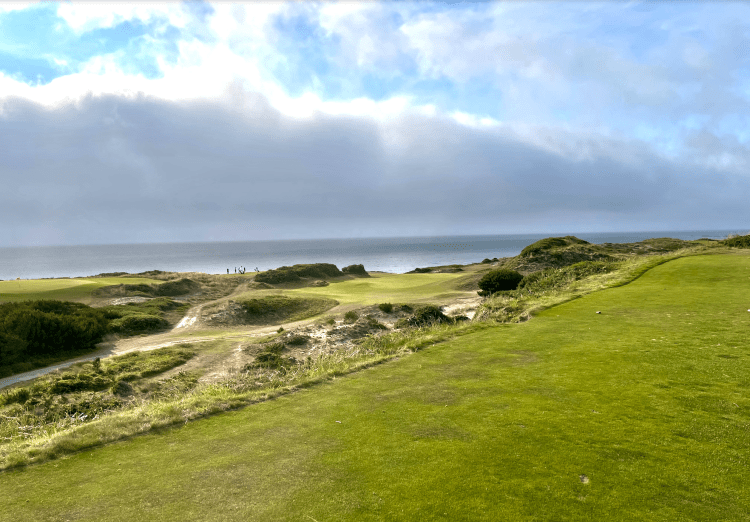
The long par-three tenth is the only bunkerless hole on the course
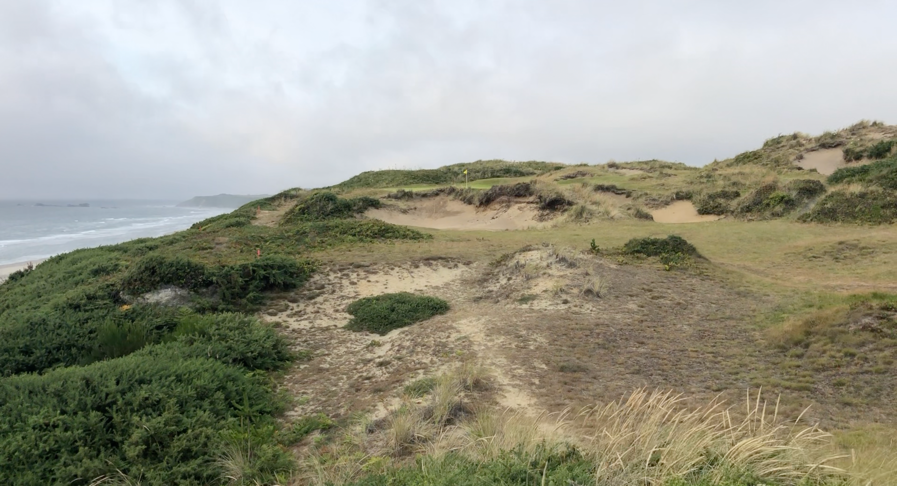
The feisty eleventh is one of the most unforgettable holes on the property
Following the connecting par-five 12th, the most dramatic hole on the course unveils itself in the 13th. Doak and Keiser famously stumbled upon this piece of land and immediately foresaw its potential. Little earthmoving was performed in construction, and the evidence shows. The hole is the epitome of “minimalist” construction at its finest.
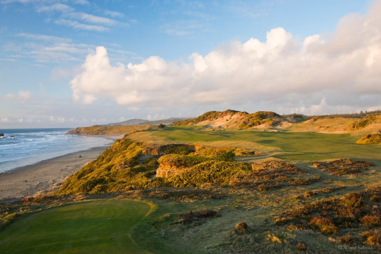
The 13th hole at Pacific (credit: Wood Sabold)
Pacific Dunes adapts much of Ballybunion’s intrigue from a routing perspective. Better yet, it moves through a greater variety of terrain than the Irish links — any course that weaves through coastline, a sandy bowl, and forested hills is bound to be attractive. This consistent shifting throughout varieties of terrain only enhances the experience during the central portion of the course.
Concluding Thoughts
A common piece of advice for amateur golfers is to avoid the “mid-round lull”. After the excitement and focus of the first few holes wear off, there is still a large amount of golf left to be played. The finishing stretch seems all too distant, and the mind wanders off and loses focus. This is a problem for the golfer. But great courses can pull him out.
To preserve momentum throughout the round, intelligent routings offer their most memorable moments in the deepest portions of their routing. Regardless of the scale of the landforms (i.e. St. Andrews vs. Ballybunion), the identity of the course should become most clear in its innermost potions. Though the “climax” might not exist in the middle, the character must be revealed. And regardless of the relative inapplicability of these measures, this artistic framework for evaluating the middle section of a course remains intact.
Golf courses are a journey. No different from literature, movies, or albums, a story exists within the physical dimensions of the course. However, if the purpose and identity of the product are not revealed in the innermost section of the story, a mere hollow shell of a product remains. Thus, it is of vital necessity that works of art, including golf courses, present the most profound realities of their mission and essence in the deepest sections of their respective journeys.